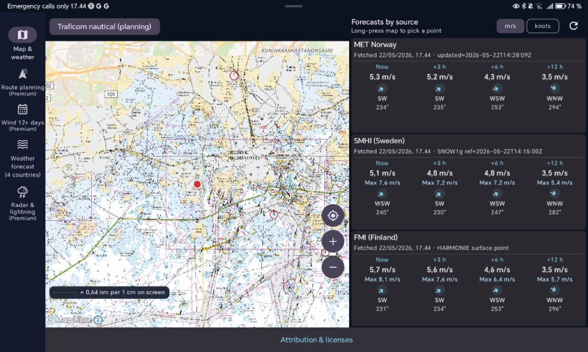
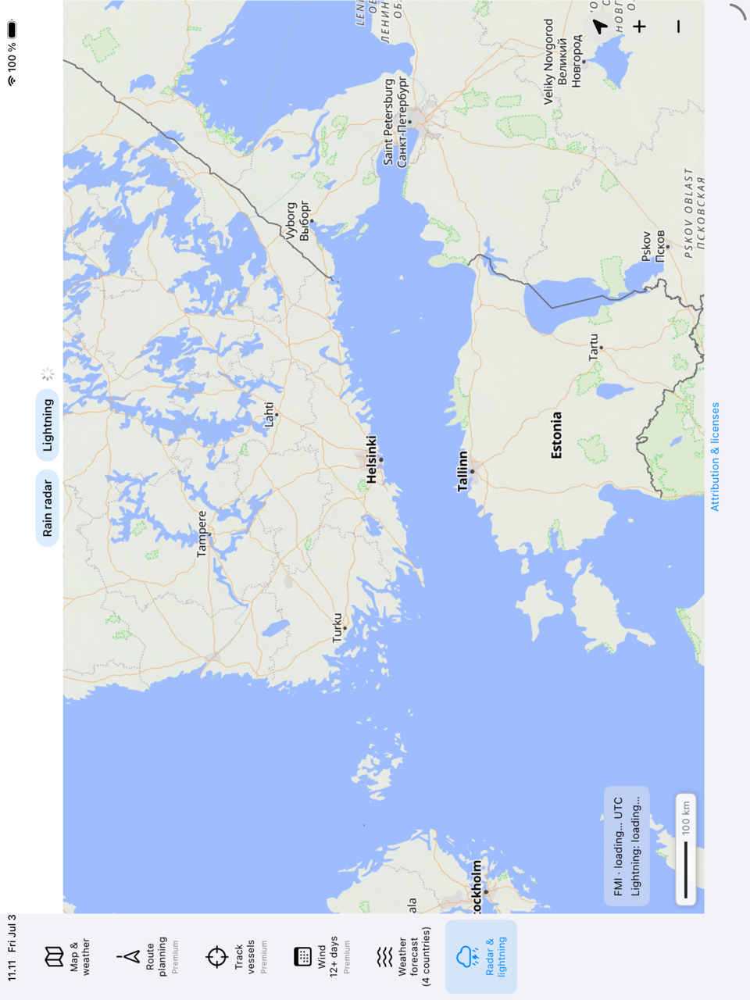
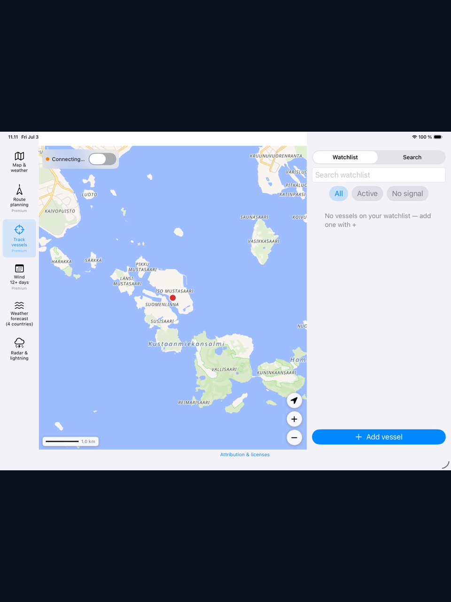
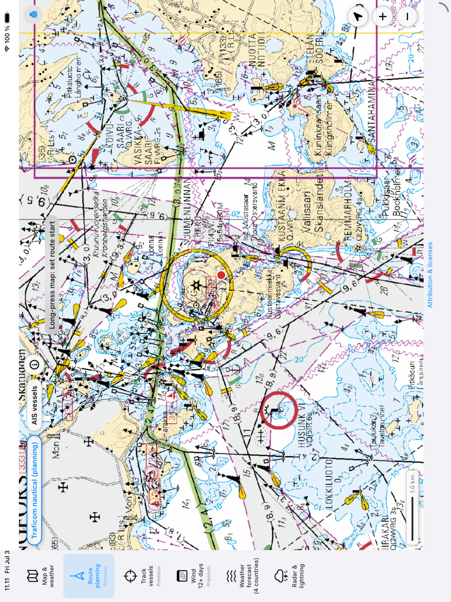
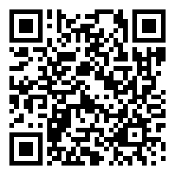
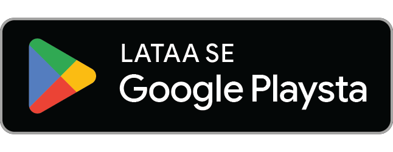
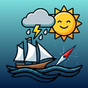
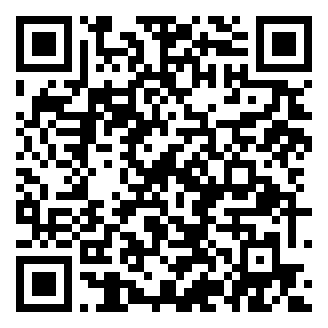

Marine Weather
Merisää ja reittisuunnittelu kaikille veneilijöille — yksi kartta, kolme ennustelähdettä.
- MET Norway · SMHI · FMI
- Android & iPhone/iPad
- Suomi · englanti · ruotsi · norja
- Ilmainen kartta & tutka · Premium reitti & AIS




Ilmainen
- Interaktiivinen kartta ja piste-ennusteet (MET, SMHI, FMI)
- Sadetutka ja salama — aikajana
- Merisää Norja, Ruotsi, Suomi, Viro
- Tuuli m/s tai solmua
- Traficom-suunnittelukartat
- Offline-banneri
Premium Play / App Store
- Reittisuunnittelu säällä reitin varrella
- 12 päivän tuulivertailu
- AIS-seuranta — aluslista ja live-sijainnit
- Offline-reittipaketti (kartta + sää)
- GPX- ja PDF-vienti
- 3 päivän kokeilu · kertamaksu tai tilaus



Lataa sovellus — valitse oma kauppa
Skannaa QR-koodi puhelimella tai tabletilla. Verkkosivu: safelight.fi/marine-weather
